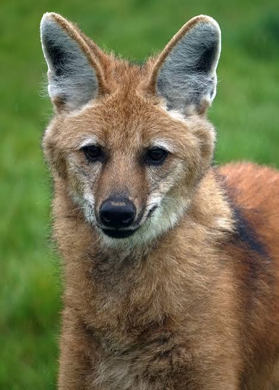
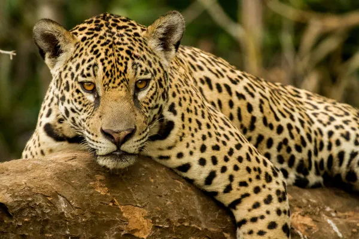

Mata e campoSapo-Cururu
Anfíbio grande e resistente com pele rugosa, famoso pelas glândulas de veneno atrás dos olhos para defesa.
Mamíferos
Conheça algumas das espécies mais fascinantes da fauna latino-americana, com fotos, curiosidades e dados importantes.

Mata e campoAnfíbio grande e resistente com pele rugosa, famoso pelas glândulas de veneno atrás dos olhos para defesa.

FlorestaUma das maiores rãs do Brasil; recebe esse nome porque sua pele secreta uma substância irritante que causa ardência.
Possui projeções na cabeça que parecem chifres e boca enorme, perfeita para emboscadas entre as folhas secas.
Pequena e de pele translúcida no ventre, permitindo ver seus órgãos internos e o coração batendo.
 Floresta
Floresta
Salamandra mexicana única que conserva características de larva (como brânquias externas) durante toda a vida adulta.